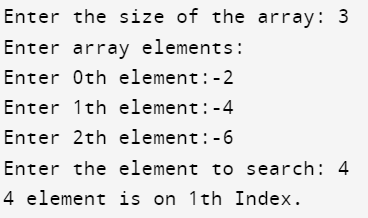

#include<stdio.h>
int LinearSearch(int arr[],int size,int key){
int i;
for(i=0;i<size;i++){
if(arr[i] == key){
return i;
break;
}
}
return 0;
}
void main(){
int arr[20],size,temp,key,i;
printf("Enter the size of the array: ");
scanf("%d",&size);
printf("Enter array elements: \n");
for(i=0;i<size;i++){
printf("Enter %dth element:-",i);
scanf("%d",&arr[i]);
}
printf("Enter the element to search: ");
scanf("%d",&key);
temp=LinearSearch(arr,size,key);
if(temp == 0){
printf("*****%d element Not found****",key);
}
else{
printf("%d element is on %dth Index.",key,temp);
}
}
